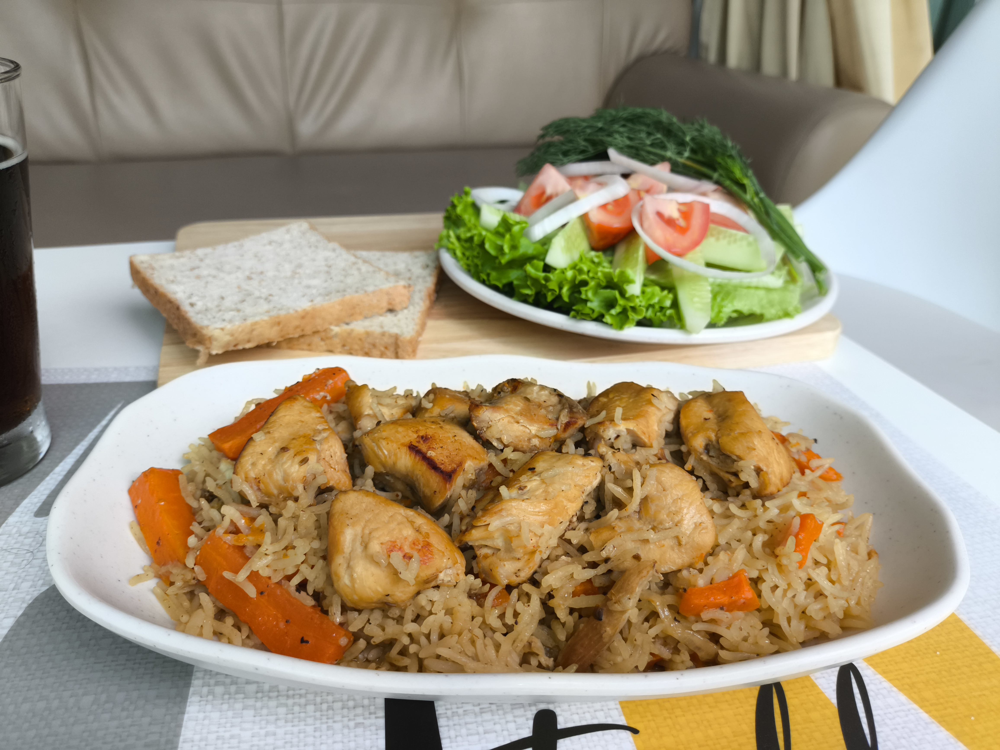
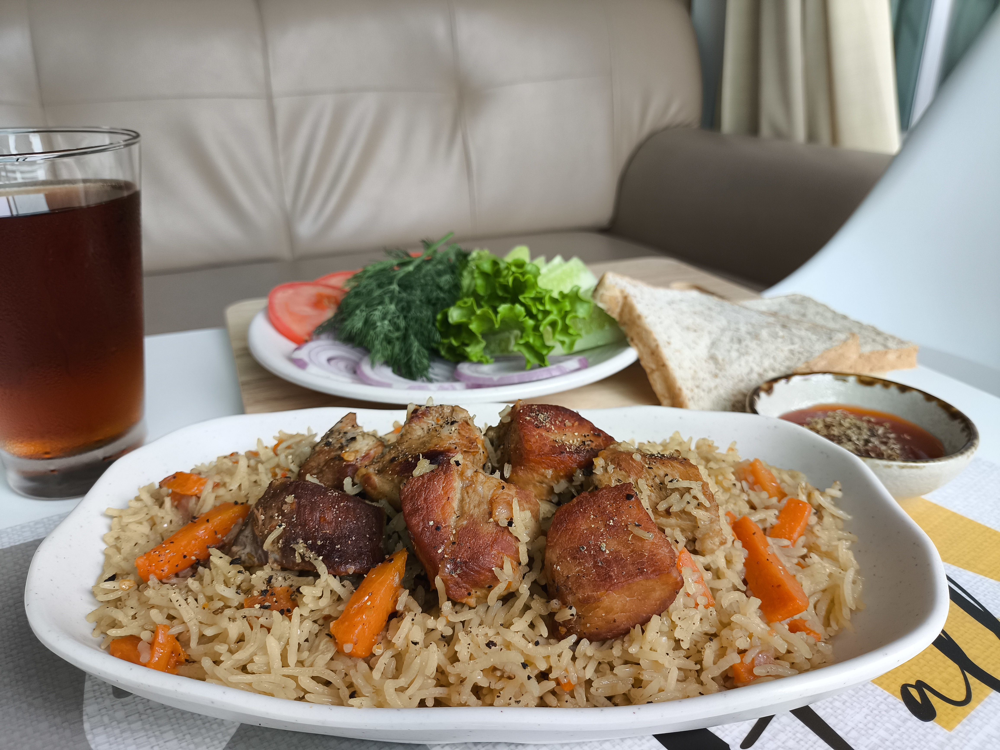
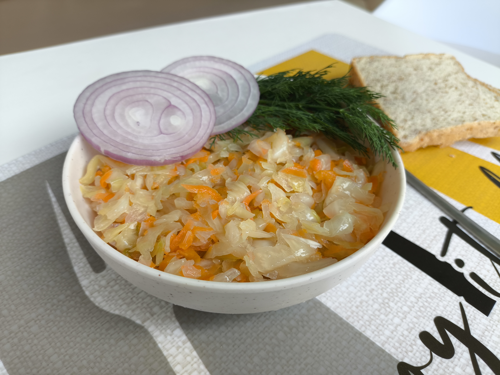

Плов и квашеная капуста ручной работы, приготовленные в Пхра Кханонге из свежих продуктов, без консервантов и полуфабрикатов. Доставка по всему Бангкоку.
Смотреть меню в TelegramМы — небольшая домашняя кухня в Бангкоке. Никакого конвейера: каждый плов томится в казане несколько часов, а капуста заквашивается естественным способом, без уксуса. Это еда, которую хочется заказывать снова и снова:)

Классический плов на курином бедре и грудке: долгое томление зирвака из моркови и лука на растительном масле, рассыпчатый длиннозёрный рис, зира, чеснок и немного красного перца. Никакой сухости — рис впитывает бульон постепенно, слой за слоем, поэтому каждая ложка получается сочной.
Порция — 300 г. Минимальный заказ — 2 порции, дальше можно добавлять по одной сколько необходимо, по 150 ฿ за порцию.
Заказать в Telegram
Более насыщенная версия для тех, кто любит поплотнее: свиное филе томится вместе с морковью и луком, пока мясо не начнёт разваливаться от вилки, а рис не пропитается этим же ароматом специй. Получается очень сытный плов — то, что хочется заказать после долгого и насыщенного дня.
Порция — 300 г. Минимальный заказ — 2 порции, каждая следующая добавляется по фиксированной цене 170 ฿.
Заказать в Telegram
Заквашена так, как это делали до появления уксуса в рецептах — естественным брожением, без единого консерванта. Несколько дней настаивания дают ту самую хрустящую текстуру и лёгкую кислинку, а не мягкую "магазинную" капусту. Источник живых пробиотиков, которых так не хватает в тайской кухне.
Хорошо стоит в холодильнике и не теряет вкус — можно взять сразу пару килограмм про запас, как дополнение к плову или любому мясному блюду.
Заказать в TelegramЭто не конвейерное производство — объём того, что можно приготовить за день, ограниченное. Чем раньше вы оформите заказ, тем больше шанс, что ваше время доставки на завтра ещё свободно.
Откройте Telegram-канал, там вы найдете удобного чат-бота, либо напишите в чат канала, выберите блюда и оформите заказ за пару минут — оплата переводом на тайскую карту.
Открыть Telegram-канал